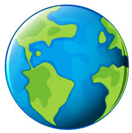
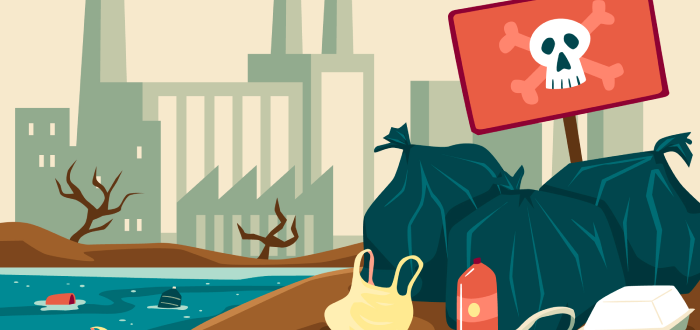

El medio ambiente se refiere al entorno físico, químico y biológico que rodea a los seres vivos, incluyendo factores como el clima, los recursos naturales y la interacción entre las especies. Este concepto abarca no solo el mundo natural, sino también la influencia humana en él, incluyendo aspectos culturales, económicos y políticos. El medio ambiente es el producto de la interacción dinámica de todos los elementos, objetos y seres vivos presentes en un lugar. Todos los organismos viven en medio de otros organismos vivos, objetos inanimados y elementos, sometidos a diversas influencias y acontecimientos. Este conjunto constituye su medio ambiente.

La contaminación ambiental tiene múltiples consecuencias negativas, incluyendo la degradación de ecosistemas, el cambio climático, la pérdida de biodiversidad, y efectos en la salud humana. También afecta la calidad del agua, el aire, y el suelo. Además, puede provocar la extinción de especies y la escasez de recursos naturales Probablemente sabes que nuestro planeta está en constante cambio, pues existen factores que transforman el entorno, algunos de ellos son los fenómenos naturales, la erosión de los ecosistemas, las acciones del hombre, entre otras. Sin embargo, esta última ha tenido mucho impacto, provocando un gran deterioro ambiental. Si bien es cierto que son una serie de factores los que causan el deterioro ambiental, también es necesario reconocer que los medios industriales de producción y las grandes empresas contribuyen a gran escala a esta problemática.
